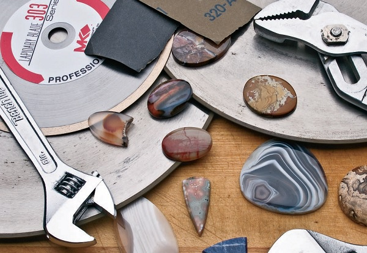

Polishing is the final, transformative stage in lapidary that elevates a shaped stone from a dull rock to a dazzling gem. The process reveals the full spectrum of a stone's color, luster, and intricate patterns. Whether you're crafting cabochons, faceting gemstones, or polishing tumbled stones, mastering polishing techniques is essential for achieving a flawless finish. This guide will delve into the methods, materials, and tips for polishing your lapidary creations to perfection.
Polishing Methods: Unleashing Brilliance
Lapidary artists employ various methods to achieve a mirror-like shine on their stone creations:
1. Mechanical Polishing
Mechanical polishing involves using machines and rotating wheels to polish stones. This method is ideal for achieving consistent and high-quality finishes quickly. The different methods of mechanical polishing are:
- Flat Laps: These motorized, rotating discs with interchangeable surfaces (diamond or ceramic) provide a consistent, even polish. Different grit sizes are used in sequence, progressing from coarse to fine.
- Wheel Polishing: Felt or leather wheels charged with polishing compounds offer versatility and control. Different wheel materials and compounds are chosen based on the type of stone and desired finish.
- Tumbling: This automated method is ideal for bulk polishing rough stones or smoothing the edges of cabochons. Stones are placed in a rotating barrel with abrasive grits and water, gradually achieving a polish over time.
2. Hand Polishing
Hand polishing uses manual tools like sandpaper, leather pads, and polishing sticks. This method is labor-intensive but allows for great control over the final finish. This hands-on approach allows for greater control and precision, particularly for smaller or intricate pieces. Various grades of sandpaper, polishing compounds, and hand tools are used.
- Sandpaper or Micromesh Pads: Used with water or oil, these progressively finer abrasives smooth out scratches and imperfections.
- Polishing Cloths: Often used with polishing compounds, these cloths provide a gentle final polish for a brilliant shine.
3. Chemical Polishing
Chemical polishing uses chemicals to smooth and shine stones, often used for specific types of gems. This method can be particularly effective for achieving a high-gloss finish on softer stones that might be damaged by mechanical polishing.
Common chemicals and materials for this type of polishing include Acids, alkalis, and other chemical solutions. For instance, oxalic acid can be used to polish quartz, while cerium oxide is a common choice for many other types of gemstones.
4. Electrochemical Polishing
Electrochemical polishing involves using an electric current and a chemical solution to polish metal-containing stones. This technique is widely used in the jewelry industry for polishing precious metals like gold and silver.
This method achieves a very high level of polish, suitable for certain gemstones and metals. It's particularly useful for intricate designs where mechanical polishing might not reach all areas.
Essential Tools and Equipment for Polishing
Polishing Wheels and Discs
- Types and Uses: Different grits and materials are used for various stages of polishing. Diamond wheels are excellent for hard stones, while softer stones might benefit from silicon carbide wheels.
- Choosing the Right Wheel for the Job: Match the wheel type to the stone's hardness and desired finish. Using the correct wheel ensures efficient material removal and a superior finish.
Polishing Compounds
- Different Types and Applications: Diamond paste, cerium oxide, and tin oxide are commonly used. Each compound has its unique properties, making it suitable for different stones and desired finishes.
- How to Apply Polishing Compounds Effectively: Techniques for applying and working with compounds to achieve the best results. This often involves using a small amount of compound on a polishing pad and working it into the stone with controlled pressure.
Polishing Machines
- Overview of Various Machines: Tumblers, flat laps, and rotary polishers. Each type of machine has its specific applications and benefits.
- Features and Benefits of Each Type: Tumblers are great for polishing large quantities of small stones simultaneously, flat laps provide a flat, even surface for polishing, and rotary polishers are versatile for different shapes and sizes.
Hand Tools for Polishing
- Essential Hand Tools for Detailed Work: Files, rasps, and handheld polishing pads. These tools are indispensable for achieving detailed finishes and working on small or intricate pieces.
- Techniques for Using Hand Tools Effectively: Tips for achieving precision with manual tools. This includes maintaining consistent pressure and using a variety of motions to avoid creating flat spots or uneven areas.
Step-by-Step Polishing Process
1. Preparing the Stone for Polishing
- Cleaning and Inspecting the Stone: Ensure the stone is free of dirt and debris. This step is crucial as any contaminants can scratch the stone during polishing.
- Addressing Any Imperfections Before Polishing: Repair or smooth out any flaws. This might involve using finer abrasives to remove chips or scratches.
2. Setting Up Your Polishing Equipment
- Safety Checks and Setup: Verify that all equipment is functioning properly and set up safely. Ensure all moving parts are secure and safety guards are in place.
- Adjusting Machine Settings for Optimal Results: Tailor the machine settings to the specific requirements of the stone. This includes adjusting the speed and selecting the appropriate abrasives.
3. Polishing Techniques
- Techniques for Achieving a High-Gloss Finish: Step-by-step methods for a flawless polish. This typically involves starting with coarser abrasives and progressively moving to finer ones.
- Handling Different Types of Stones During Polishing: Adjust techniques based on the stone's characteristics. Softer stones might require gentler handling, while harder stones can withstand more aggressive polishing.
4. Post-Polishing Processing
- Cleaning and Inspecting the Polished Stone: Remove any residues and check the polish. A final inspection ensures that all imperfections have been addressed.
- Addressing Any Remaining Imperfections: Final touches to perfect the stone. This might involve spot polishing areas that need extra attention.
Polishing Steps for Different Lapidary Projects
Cabochons
- Start with coarse-grit diamond laps or sanding discs to shape and smooth the cabochon.
- Progress to finer grits, working your way up to a pre-polish stage.
- Use a polishing compound like cerium oxide on a felt or leather wheel to achieve the final high gloss.
Faceted Stones
- Polish each facet individually on a faceting machine, starting with coarser grits and working towards finer ones.
- Use specialized polishing laps and compounds designed for faceting.
Tumbled Stones
- Start with coarse grit in the tumbler, followed by progressively finer grits.
- In the final stages, add polishing compounds for a shiny finish.
Carvings and Sculptures
- Combine hand polishing with various grits and compounds for intricate details.
- Use flexible polishing tools to reach tight corners and crevices.
- Finish with a wax or sealant to protect and enhance the shine.
Advanced Polishing Techniques
Achieving a Mirror Finish
- Techniques for Achieving the Highest Level of Polish: Methods for a flawless, reflective finish. This often involves using ultra-fine abrasives and specialized polishing compounds.
- Tips for Working with Different Types of Stones: Specific advice for various gemstones. Each stone has unique properties that influence how it should be polished.
Multi-Step Polishing Processes
- Combining Different Polishing Techniques for Optimal Results: Integrate multiple methods for the best finish. This might include starting with mechanical polishing and finishing with hand techniques.
- Step-by-Step Guide for Advanced Polishing Projects: Detailed instructions for complex polishing tasks. These guides provide a roadmap for achieving exceptional results.
Tips for a Brilliant Shine:
- Cleanliness: Maintain a clean workspace and wash your hands frequently to avoid transferring dirt or grime to the stone.
- Separate Laps/Wheels: Use dedicated laps or wheels for each grit to prevent cross-contamination.
- Lubrication: Apply water or oil to the lap or stone to reduce friction and prevent overheating.
Techniques and Best Practices
Polishing Techniques
- Basic Techniques for Beginners: Introductory methods for those new to lapidary. These might include simple hand polishing methods or using basic mechanical tools.
- Advanced Techniques for Experienced Lapidarists: More complex techniques for achieving intricate finishes. This includes using multi-step processes and advanced equipment.
Maintaining Your Polishing Equipment
- Regular Maintenance Routines: Keep your tools and machines in top condition. Regular cleaning and maintenance extend the life of your equipment and ensure consistent results.
- Troubleshooting Common Issues: Identify and solve problems that may arise during polishing. Common issues include uneven polishing, scratches, and tool malfunctions.
Safety Precautions
- Personal Protective Equipment (PPE): Safety glasses, gloves, and masks to protect against dust and chemicals. Proper PPE is essential to prevent injuries and health issues.
- Safe Handling of Polishing Tools and Materials: Best practices for avoiding accidents and injuries. This includes using tools correctly and storing materials safely.
- Eye and Lung Protection: Always wear safety glasses and a dust mask to prevent inhalation of fine particles.
- Ventilation: Ensure adequate ventilation when working with polishing compounds.
- Handling: Use polishing wheels and tools with care, following the manufacturer's instructions.
Troubleshooting: Overcoming Polishing Challenges
- Pitting: This can be caused by using too coarse grit or too much pressure. Switch to a finer grit and use a lighter touch.
- Scratching: Ensure you're using clean polishing materials and avoid cross-contamination between different grits.
- Uneven Polish: Maintain even pressure and use a consistent motion while polishing. Ensure the polishing surface is flat and true.
By mastering these polishing techniques and understanding the nuances of different materials, you'll unlock the full potential of your lapidary creations, achieving a dazzling, professional-quality finish that showcases the true beauty of your stones.